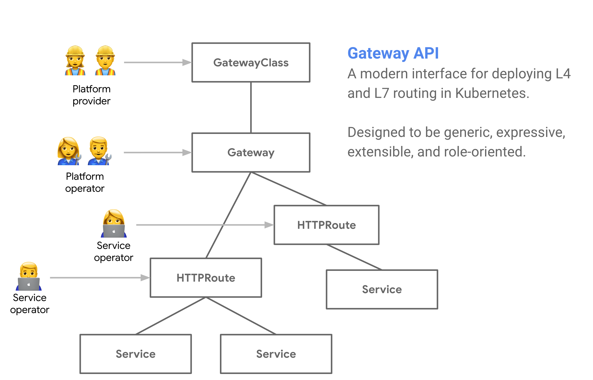

API Concepts
The Gateway API is a collection of API resources for modeling Service networking. It is a role-oriented API and has resources that map to the roles that typically manage different aspects of the Service. The following diagram shows how the resources and roles relate to one another:

Resource model overview
- GatewayClass defines a template for L4 and L7 load balancers in a Kubernetes cluster. A GatewayClass could represent a load balancing controller or a specific type of proxy implementation. It could be modeled as something that is very high level and has a high degree of configurability or it could be very specific and be modeled very close to an individual use-case.
- Gateway is an instantiation of a GatewayClass. Gateways route traffic to or within a cluster. They process incoming requests defined by their Routes to Service backends and define where and how the load balancing data plane is listening for traffic. Gateways are implemented via a Gateway controller.
- Routes define protocol-specific rules for mapping requests from a Gateway to Kubernetes Services. A Route contains multiple route rules and each rule maps to a Service. A Route is pure configuration and has no effect unless it is bound to a Gateway.
- BackendPolicy provides a way to configure connections between a Gateway and a backend. For the purpose of this API, a backend is any resource that a route can forward traffic to. A common example of a backend is a Service. Configuration at this level is currently limited to TLS, but will expand in the future to support more advanced policies such as health checking. For more information on what may be configured with this resource in the future, refer to the related GitHub issue.
- Gateway controller is not a resource type, but rather a running piece of software which implements the control plane for a GatewayClass (and all of its associated Gateways.) Just like an Ingress controller this could be cluster-hosted software, a cloud-hosted controller, or a hardware controller. A Gateway controller could map 1:1 with a GatewayClass or it could implement many kinds of GatewayClasses.
Roles and personas.
The Gateway API resources map to different kinds of roles which are common when operating Kubernetes clusters:
- Infrastructure Provider - this is the persona who defines the GatewayClass. This may be a cloud provider who defines built-in GatewayClasses that map to different kinds of cloud load balancers. It could also be an ISV that offers their product through GatewayClasses they define. Custom GatewayClasses could also be defined by platform operators who desire to have more control and have the skills to write or augment Gateway controllers.
- Platform Operator - this persona is responsible for the Kubernetes platform which applications are hosted on. They care about maintaining platform policies, setting standards, and having a degree of consistency across services that makes it easy to operate the platform. The platform operators may make certain GatewayClasses available to service operators, or if they want more control, manage Gateways directly for service operators to use via Routes.
- Service Operator - owns the application that is hosted on the Kubernetes platform. They define the traffic matching for what is sent to their Service backends. They may share a Gateway with other teams but have ownership over a specific domain within their organization. Or they may own a Gateway (and its associated IP address) and have full control over the traffic routing on that Gateway.
Please refer to the roles and personas section in the Security model for details.
Request flow
A typical client/gateway API request flow for a gateway implemented using a reverse proxy is:
- A client makes a request to http://foo.example.com.
- DNS resolves the name to a
Gatewayaddress. - The reverse proxy receives the request on a
Listenerand uses the Host header to match anHTTPRoute. - Optionally, the reverse proxy can perform request header and/or path matching based
on
matchrules of theHTTPRoute. - Optionally, the reverse proxy can modify the request, i.e. add/remove headers, based
on
filterrules of theHTTPRoute. - Lastly, the reverse proxy forwards the request to one or more objects, i.e.
Service, in the cluster based onforwardTorules of theHTTPRoute.
API Resources
GatewayClass
GatewayClass defines a set of Gateways that share a common configuration and behaviour. Each GatewayClass will be handled by a single controller, although controllers MAY handle more than one.
GatewayClass is a cluster-scoped resource. There MUST be at least one GatewayClass defined in order to be able to have functional Gateways. A controller that implements the Gateway API does so by providing an associated GatewayClass resource that the user can reference from their Gateway(s).
This is similar to IngressClass for Ingress and StorageClass for PersistentVolumes.
In Ingress v1beta1, the closest analog to GatewayClass is the ingress-class annotation, and in IngressV1, the closest analog is the IngressClass object.
kind: GatewayClass
metadata:
name: cluster-gateway
spec:
controller: "acme.io/gateway-controller"
We expect that one or more GatewayClasses will be created by the
infrastructure provider for the user. It allows decoupling of which mechanism
(e.g. controller) implements the Gateways from the user. For instance, an
infrastructure provider may create two GatewayClasses named internet and
private to reflect Gateways that define Internet-facing vs private, internal
applications.
kind: GatewayClass
metadata:
name: internet
...
---
kind: GatewayClass
metadata:
name: private
...
The user of the classes will not need to know how internet and private are
implemented. Instead, the user will only need to understand the resulting
properties of the class that the Gateway was created with.
GatewayClass parameters
Providers of the Gateway API may need to pass parameters to their controller
as part of the class definition. This is done using the
GatewayClass.spec.parametersRef field:
# GatewayClass for Gateways that define Internet-facing applications.
kind: GatewayClass
metadata:
name: internet
spec:
controller: "acme.io/gateway-controller"
parametersRef:
group: acme.io/v1alpha1
kind: Config
name: internet-gateway-config
---
kind: Config
apiVersion: acme.io/v1alpha1
metadata:
name: internet-gateway-config
spec:
ip-address-pool: internet-vips
...
Using a Custom Resource for GatewayClass.spec.parametersRef is encouraged
but implementations may resort to using a ConfigMap if needed.
GatewayClass status
GatewayClasses MUST be validated by the provider to ensure that the configured
parameters are valid. The validity of the class will be signaled to the user via
GatewayClass.status:
kind: GatewayClass
...
status:
conditions:
- type: InvalidParameters
status: Unknown
...
A new GatewayClass will start with the InvalidParameters condition set to
Unknown. At this point the controller has not seen the configuration. Once the
controller has processed the configuration, the condition will be set to
False:
kind: GatewayClass
...
status:
conditions:
- type: InvalidParameters
status: False
...
If there is an error in the GatewayClass.spec, the conditions will be
non-empty and contain information about the error.
kind: GatewayClass
...
status:
conditions:
- type: InvalidParameters
status: True
Reason: BadFooBar
Message: "foobar" is an FooBar.
Gateway controllers
The GatewayClass.spec.controller field is used to determine whether
or not a given GatewayClass is managed by the controller.
This format of this field is opaque and specific to a particular controller.
Which GatewayClass is selected by a given controller field depends on how
various controller(s) in the cluster interpret this field.
It is RECOMMENDED that controller authors/deployments make their
selection unique by using a domain / path combination under their
administrative control (e.g. controller managing of all controllers
starting with acme.io is the owner of the acme.io domain) to avoid
conflicts.
Controller versioning can be done by encoding the version of a controller into the path portion. An example scheme could be (similar to container URIs):
acme.io/gateway/v1 // Use version 1
acme.io/gateway/v2 // Use version 2
acme.io/gateway // Use the default version
Gateway
A Gateway is the instantiation of a GatewayClass. Gateways route traffic to Services within the cluster. They process incoming requests defined by their Routes to Service backends. Gateways define where and how the load balancing data plane is listening for traffic. Gateways are deployed through the respective Gateway controller which could be a cluster-hosted software controller, a cloud Gateway controller, or a controller for hardware data-planes. Routes are resources that bind to Gateways. This binding allows a Route to configure routing rules for how a Gateway processes traffic. As the Gateway spec captures user intent, it may not contain a complete specification for all attributes in the spec. For some GatewayClasses, the user may omit fields such as addresses, ports, TLS settings, which have defaults for that specific class.
The Gateway spec defines the following:
- The
GatewayClassused to instantiate this Gateway. - The Listener bindings, which define addresses and ports, protocol termination,
and TLS settings. The Listener configuration requested by a Gateway definition can
be incompatible with a given
GatewayClass(e.g. port/protocol combination is not supported). - The Routes, which describe how traffic is processed and forwarded.
Listener
The following Gateway is of the internal GatewayClass. A listener requires the following attributes:
- The port where a Gateway is listening. This defines the ports where the load balancer is accepting traffic.
- The protocol that the Gateway is listening for.T
- The type of resources that may bind to the Gateway. In this case the HTTPRoute resource is specified. Even more granular filters can be specified to limit what can bind to the
simple-gatewayincluding resource type, Namespace selection, and label selectors.
If the Listener configuration requested by a Gateway definition is incompatible with a given GatewayClass, the Gateway will be in an error state, signaled by the status field.
kind: Gateway
apiVersion: networking.x-k8s.io/v1alpha1
metadata:
name: cluster-gateway
spec:
class: internet
listeners:
- protocol: HTTP
port: 80
routes:
kind: HTTPRoute
Gateways are flexible resources and they can be deployed in multiple ways depending on how the administration of a load balancer is shared or partitioned between different groups within an organization. This role-oriented design allows flexible partitioning of portions of the load balancer configuration.
Gateway Status
Gateways track status for the Gateway resource as a whole as well as each
Listener it contains. The status for a specific Route is reported in the
status of the Route resource. Within GatewayStatus, Listeners will have
status entries corresponding to their name. Both GatewayStatus and
ListenerStatus follow the conditions pattern used elsewhere in Kubernetes.
This is a list that includes a type of condition, the status of that condition,
and the last time this condition changed.
Route
Route objects define protocol-specific rules for mapping requests from a Gateway to Kubernetes Services. A Route is pure configuration and has no effect unless it is bound to a Gateway. A Route resource has a list of one or more route rules which match on the protocol of that type of Route. Routes are protocol-specific resources because traffic matching is highly protocol-dependent. The separation of route resources allow them to evolve independently for the needs of that specific protocol.
HTTPRoute and TCPRoute are the only defined Route resources at this time but future proposals for GRPCRoutes, UDPRoutes, and TLSRoutes have been discussed.
HTTPRoute
HTTPRoute resources match HTTP and HTTPS traffic against Gateways that support them. Each route rule has at least one of these three clauses:
- Match defines a matching predicate such as
path = "/app"orheaders["x-my-app"] == "bar". The match determines which kind of traffic is being filtered for in this route rule. - Filter modifies the request or response inline with the request flow. Filters might rewrite paths or add additional headers
- Action defines the final destination for the request. The most common action will be to direct matching traffic to a specific Kubernetes Service, but other actions are also possible such as specific response status codes, redirects, or custom extensions.
Note that the match and filter clauses are optional while action is required so that the Gateway knows how to direct and process the traffic. The following HTTPRoute has a hostname match for foo.com and bar.com along with additional header and path matches.
apiVersion: networking.x-k8s.io/v1alpha1
kind: HTTPRoute
metadata:
name: my-route
namespace: default
spec:
hosts:
- hostnames:
- foo.com
rules:
- action:
forwardTo:
- targetRef:
name: foo-svc
- hostnames:
- bar.com
rules:
- matches:
- path: /login
headers:
accept: text/html
action:
forwardTo:
- targetRef:
name: bar-svc
Matches
TODO
Filters
TODO
Action
TODO
TLS
TODO
Gateway & Route Binding
TODO - explain different method of matching/binding Gateways and Routes together